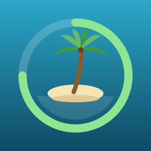

专注岛 Focus Isle
每一次专注，都让你的小岛长大一点。
Every focus session grows your island.
常见问题
为什么需要“屏幕使用时间”权限？
专注岛通过 iOS 的屏幕使用时间功能，在专注期间真正屏蔽你选择的 App。我们无法看到你选了哪些 App，也看不到你的使用记录。
不小心拒绝了授权怎么办？
打开专注岛 → 右上角“设置” → “重新授权”。如果仍然无法授权，请前往 iOS 设置 → 屏幕使用时间，确认屏幕使用时间已开启。
专注结束了，App 还是被屏蔽？
打开一次专注岛即可自动解除。如果问题仍然存在，请在专注岛的设置中重新授权，并联系我们。
放弃专注会怎样？
小岛上一个物件会枯萎。下次完成专注时，会优先把它修复。
换手机后数据还在吗？
目前所有数据只保存在本机，暂不支持同步。iCloud 同步在我们的计划中。
联系我们
FAQ
Why does Focus Isle need Screen Time access?
Focus Isle uses iOS Screen Time to actually block the apps you choose while you focus. We can't see which apps you pick or how you use them.
I denied access by mistake.
Open Focus Isle → Settings (top right) → Request Access Again. If that doesn't work, make sure Screen Time is turned on in iOS Settings → Screen Time.
My session ended but apps are still blocked.
Open Focus Isle once and blocking will be lifted. If it persists, re-grant access in Settings and contact us.
What happens if I give up?
One item on your island withers. Your next completed session will bring it back first.
Will my data move to a new phone?
For now, all data stays on the device. iCloud sync is on our roadmap.